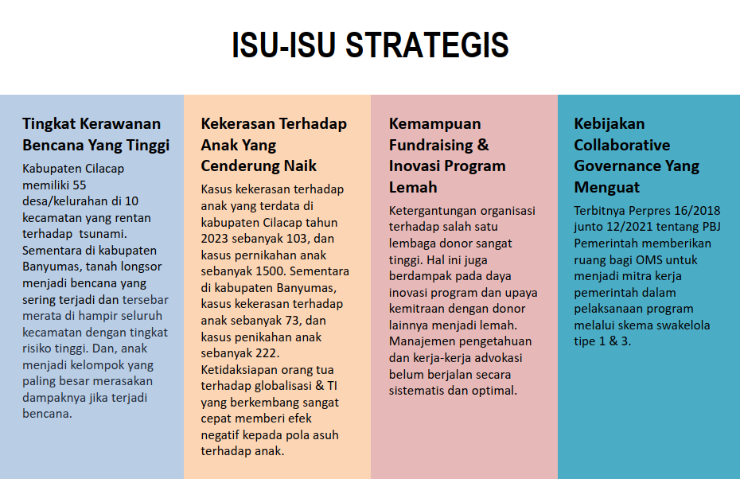

Halo!
Selamat datang di website YSBS Mino Martani. Mari bersama-sama mewujudkan dunia yang lebih ramah anak! 🌟
Selamat datang di website YSBS Mino Martani. Mari bersama-sama mewujudkan dunia yang lebih ramah anak! 🌟
"Menjadi lembaga pendukung yang kompeten untuk terwujudnya dunia yang ramah anak"
Lihat Profil LengkapYayasan Sosial Bina Sejahtera (YSBS) adalah organisasi kemanusiaan yang resmi berdiri pada 12 Maret 1976. Kami berfokus pada pemberdayaan masyarakat melalui akses pendidikan, kesehatan, dan infrastruktur vital. Unit Mino Martani secara khusus mendukung tumbuh dan kembang anak di 12 desa wilayah Cilacap dan Banyumas.
YSBS diinisiasi oleh Rm. Carolus Burrows, O.M.I, seorang ekspatriat asal Finlandia yang memiliki kepedulian tinggi terhadap persoalan sosial kemanusiaan di Indonesia. Yayasan ini bertujuan membantu masyarakat golongan miskin dan lemah. Secara legalitas, YSBS telah disahkan melalui Keputusan Menteri Hukum & Hak Asasi Manusia Nomor: AHU-06814.50.10.2014 pada tanggal 29 September 2014.
Menjadi lembaga pendukung yang kompeten untuk terwujudnya dunia yang ramah anak.
Memberikan pendampingan kepada 192 kelompok dengan 992 anggota KSW yang tersebar di Kabupaten Cilacap untuk peningkatkan pendapatan keluarga.
Memberikan bantuan pembangunan bendungan dan irigasi pertanian di 4 desa Kecamatan Kampung Laut yang tersebar di Kabupaten Cilacap untuk peningkatkan pendapatan keluarga.
Melakukan penghijauan lingkungan melalui pembuatan demplot pembibitan dan penanaman pohon di area Nusakambangan Kab. Banyumas, Jawa Tengah.
Memberikan bantuan kepada masyarakat yang mengalami dampak bencana di seluruh wilayah Indonesia.
(Unit Kami) Pendampingan tumbuh & kembang anak di 12 desa Kabupaten Cilacap dan Banyumas.
Berikut adalah ringkasan isu strategis kami:
Galeri foto dan video kegiatan program-program terbaru YSBS Mino Martani


Struktur Organisasi dan Komposisi Personil YSBS Mino Martani

Mari bersama-sama mewujudkan dunia yang lebih ramah anak. Kontribusi Anda sangat berarti untuk masa depan anak-anak Indonesia.